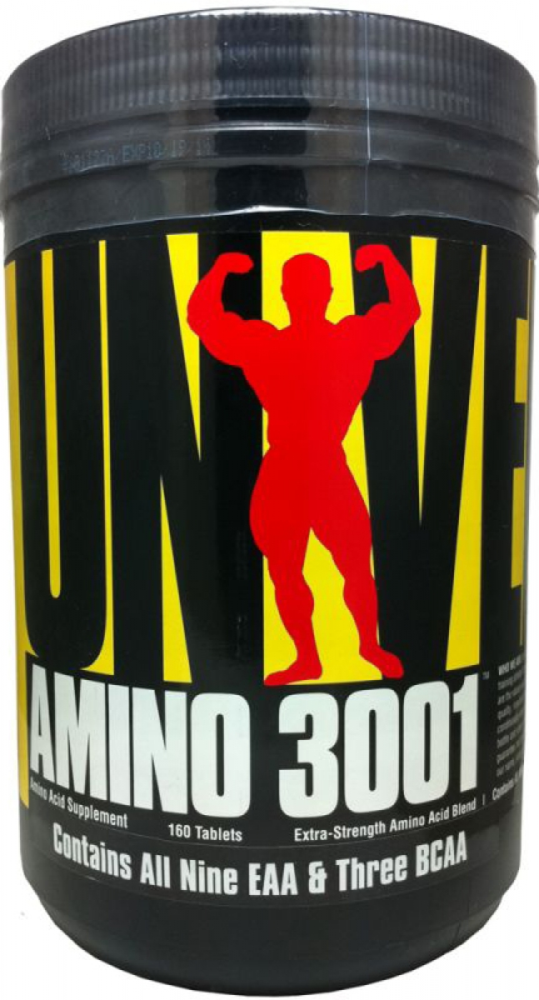

hulkSupplement.com
- HULK Supplement
- İndirimli Ürünleri Kaçırmayın!
Ürün Özellikleri: Yoğun antrenmanlı vücut geliştiriciler, kuvvet sporcuları ve cross-fit sporcuları tarafından sürekli, yoğun antrenman ve sağlıklı, dengeli beslenme ile bağlantılı olarak yaygın olarak alınan yüksek kaliteli amino asitlerden yapılmış bir besin takviyesidir. Yeterli sıvı ile günde üç kez iki tablet alın... Not: Önerilen günlük alım miktarı aşılmamalıdır! Dengeli ve çeşitli beslenmenin ve sağlıklı bir yaşam tarzının yerine kullanmayın. Küçük çocukların ulaşamayacağı yerde saklayın! * Kas kütlesinin artmasına katkıda bulunur. Dengeli ve çeşitli bir diyet ve sağlıklı bir yaşam tarzını takip etmek önemlidir. Isıdan, nemden ve güneş ışığından uzak tutun.. İçindekiler: Hidrolize peynir altı suyu (süt), peynir altı suyu konsantresi (süt), ayırıcı madde (yağ asitlerinin magnezyum tuzları, silikon dioksit). Eser miktarda gluten, kabuklu yemişler, kabuklular, yumurta, balık, soya fasulyesi ve acı bakla içerebilir. .
Her servisinde 3001 mg değerinde kompleks amino asit bulunmaktadır. Saf formunda BCAA, Alanin ve Glutamin amino asitlerini barındırmaktadır. Glutamin, kas hücrelerinin sıvı alımında yardımcıdır. Susuz kalan kas hücresinde aniden parçalanmalar görülür ve bu durum kas kaybına ve atropiye neden olmaktadır. Bu yüzden sporcuların glutamin asidini yeterli miktarda alması çok büyük önem taşımaktadır.Mucize molekülü olan "Arginin" amino asidi içermektedir. Arginin amino asidi, kemik yaralanması ve doku hasarlarını iyileştirmede etkin rol oynamaktadırlar. Aynı zamanda, bağışıklık sistemini güçlenmesini sağlayan T-lenfositlerin üretilmesinde etkin bir rol oynamaktadır. B6 vitamini içermektedir. Dayanıklılık sürenizi ve seviyenizi artırdığı gibi antrenman sonrasında çabuk toplanmanızı sağlayacaktır.İçeriğinde bulunan Nitrojen, kasların oluşmasında ve gelişmesinde etkilidir
West Nutrition L-Glutamine Nedir? West Nutrition L-Glutamin kasların ihtiyaç duyduğu glutamin aminoasidi ihtiyacına cevap verecek bir üründür. 1 Servis içeriğinde 5000 mg L-Glutamin bulunur. İçimi kolaylaştıran böğürtlen veya yeşil elma aroması ve yüksek servis sayısı ile avantajlıdır. L-GLUTAMİN AMİNOASİT İÇEREN SPOR GIDASIDIR Gıdanın Net miktarı: 420 g – 70 Servis Kullanım Şekli:1 porsiyon (1 tatlı kaşığı, 6g), bir bardak (200ml) su ile karıştırarak antrenman sonrası kullanılır. Uyarılar:B6 vitamini ile birlikte tüketilmesi tavsiye edilir. Bu gıda yeterli ve dengeli bir diyetle birlikte tüketilmelidir, tek başına bütün besin öğeleri ihtiyacını karşılamaz. Bu ürünler hekim ve diyetisyen önerilerine göre kullanılmalıdır. 15 Yaş altındaki çocuklar veya hamile ya da emziren kadınlar için tavsiye edilmez, sadece hekim veya diyetisyen gözetiminde tüketebilirler. Muhafaza:Ağzı kapalı olarak serin ve kuru bir yerde, yüksek ısıdan, nemden ve güneş ışığından koruyarak saklayınız. Yeşil Elma Aromalı Ürün İçin İçindekiler:: L-Glutamin %83, Doğala Özdeş Yeşil Elma Aroması, Asitlik Düzenleyici (Sitrik Asit E330), Tatlandırıcılar (Sukraloz E955, Asesulfam K E950), Renklendirici (E102 Tartrazin, E133 Brilliant Blue FCF). Alerjenler: Aroma kaynaklı sülfit ve gluten içerebilir. Uyarı:E102: Çocukların aktivite ve dikkatleri üzerine olumsuz etkileri bulunabilir. Böğürtlen Aromalı Ürün İçin İçindekiler:L-Glutamin %83, Doğala Özdeş Böğürtlen Aroması, Asitlik Düzenleyici (Sitrik Asit E330), Tatlandırıcılar (Sukraloz E955, Asesulfam K E950), Renklendirici (Pancar Kökü Kırmızısı E162). Alerjenler: Aroma kaynaklı sülfit ve gluten içerebilir.